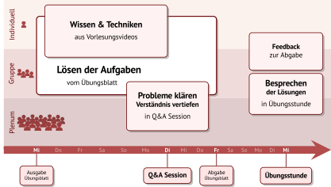

Algorithms and Data Structures

Algorithms and Data Structures is an introductory course I gave at TU Kaiserslautern in the winter term 2016/17 on basic algorithms and data structures for non-CS majors, predominantly economics or socioinformatics students (see course catalog).
The course covers searching, sorting, binary search trees, hashing and graph algorithms. Since for this audience, it is the only CS course they take with a theoretical flavor, it also touches on computability and intractability.
Didactic Concept
I flipped the entire course: The students watched the a selection of online lectures, most from the algorithms lecture videos by Robert Sedgewick and Kevin Wayne. Then we discussed the material in class in a Q&A session.
Before even releasing the next round of videos, I gave my students a selection of exercise and application problems. This gives watching the videos and mastering their content an immediate motivation: you have to learn the new concepts in order to apply them to the problem at hand (problem orientation).
To make also watching the videos a more active experience, I prepared guide questions for every video; relatively straight-forward issues that the students should be able to answer after watching carefully.

Prior-Knowledge Survey
Since the group was so diverse and their level of prior knowledge was unclear to me, I started the course with an ungraded diagnostic assessment of their math and programming skills.
Programming Project: Maze-Generator
Before the lectures for the course started, I had my students do a small programming project. The intention was twofold:
-
On one hand this served as a refresher of their Java skills, which are helpful in understanding the code that would follow in the lectures,
-
and the other hand, the application to generate random mazes would serve as playground in later assignments to test out further algorithms.
To make it more fun for the students, I added a competitive component: All groups that submitted their maze generator on time would contribute one maze to the maze contest, which I printed (on an A0 plotter—the mazes were quite big!) for the others to solve collaboratively by pen on paper.
For every solved maze they got some extra credit, but if the course could not solve a maze within 10 minutes, the group that generated the maze would get four times the credit.
It was a lot of fun—and solving the mazes was much harder than I thought.
Evaluation
This is a screenshot of the results of the official course evaluation for Algorithms & Data Structures. The original website is only accessible from within the university network of TU Kaiserslautern.

{kind=link}
Unfortunately, only 6 of the roughly 40 students who started the course gave feedback in the course evaluation.
Overall, the course caused mixed feelings. The students struggled with the unfamiliar flipped-class concept and the unfamiliar subject matter (most pursued a major in economics), and some students had much more problems specifically with the fact that videos are in English than I anticipated. As a consequence, the problem-centered approach did not motivate these students to learn from the videos, but rather added to the frustration they felt when watching the videos.
Some organizational aspects were suboptimal, but mostly I think I failed in establishing a culture of open communication early enough in the course to solve the problems mentioned above. This was very unfortunate. There is certainly also a need to get used to new didactic concepts (on both sides, students and instructors) and this was the first time for all of us. I’m still convinced the problem-based flipped-class concept is well suited for algorithms & data structures and more effective than traditional lectures; the lesson life cycle needs further tuning, and as instructor I have to learn to communicate even more clearly what the intended outcomes of the course are.
Original Website
What follows is the original site for the flipped lectures that I used for the course. The linked videos are all in English, but the descriptions and organizational matters are in German.
Folien
Für organisatorische Dinge und die Erläuterung meines didaktischen Konzepts habe ich Folien vorbereitet; ebenso zu einzelnen Themenblöcken, für die ich keine Videos gefunden habe, die genau abdecken, was ich zeigen möchte.
- Überblick zeitliche Organisation, didaktisches Konzept, Programmierprojekt
- Q&A zu Lektion 1, Lektion 2: Maschinen und Modelle
- Ergänzungen zu Lektion 3: Analysis of Algorithms
Flipped Lectures
Auf dieser Seite findet ihr die Vorlesungsvideos für flipped sessions. Allgemeine Informationen und Werkzeuge zur Vorlesung findet ihr hier.
Versucht die zu jedem Video angegebenen Leitfragen bzw. Aufgaben zu bearbeiten, während ihr zuschaut! Macht euch dabei Notizen und bringt diese in die Q&A Session mit. Tragt Probleme und Fragen, die euch dabei auffallen, direkt in die Fragensammlung ein. Ich empfehle, diese Notizen handschriftlich zu machen: The Pen Is Mightier Than the Keyboard (pdf).
Tipp: Youtube erlaubt (in der Desktop-Variante) die Abspielgeschwindigkeit an euer Tempo anzupassen (ohne dabei die Tonhöhe zu verändern). Außerdem könnt ihr euch von Youtube automatisch generierte Untertitel einblenden lassen.


Wochenplan einer Lektion
Zu jeder Lektion gehören Übungsaufgaben, Materialien (Videos), eine Q&A Session und eine Übungsstunde. Die Termine oben beziehen sich stets auf die Q&A Session (bis dahin sind die entsprechende Materialien durchzugehen).
Aus organisatorischen Gründen fassen wir mehrere Lektionen zu einem Wochenplan zusammen; diese teilen sich dann Q&A Session etc. Tatsächlich umfasst der Wochenplan zwei Wochen (Mi bis Mi), sodass immer zwei Wochenpläne aktuell am Laufen sind. In der zweiten Woche findet aber nur die Übungsstunde statt.